Is project ko chalane, demo dene aur har module ka maqsad samajhne ki mukammal guide — Roman Urdu mein, presentation ke liye screenshots ke saath.
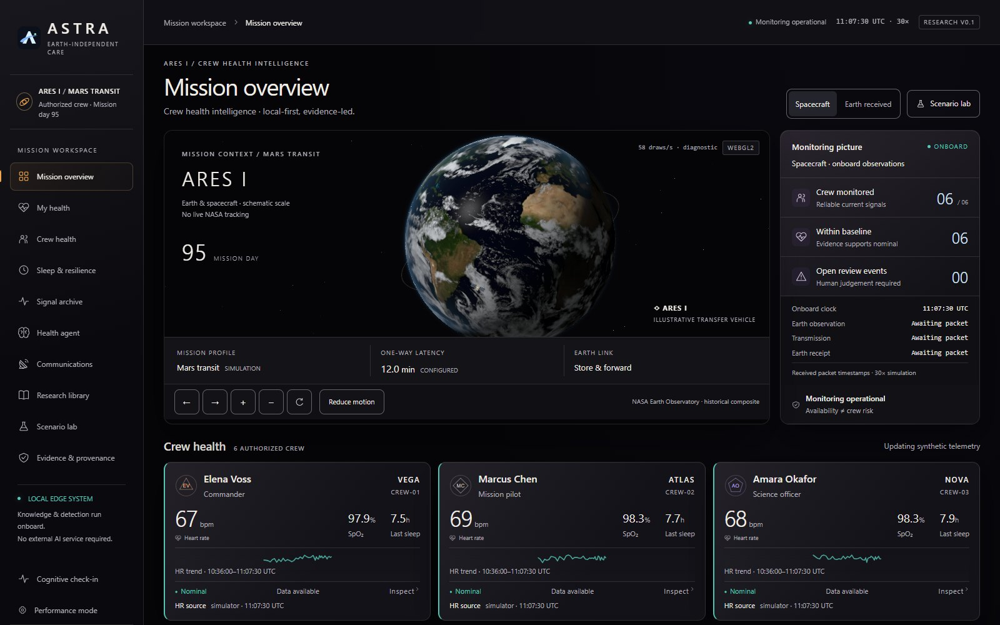
ASTRA ek offline chalne wala health monitoring software hai jo lambe space missions (jaise Mars ka safar) par astronauts ki sehat par nazar rakhta hai, unhein batata hai ke kya badla hai, aur bataata hai ke ab kya karna chahiye.
Mars jaise mission par Earth se paighaam aane jaane mein kai minute lagte hain, aur kabhi signal bilkul band (“blackout”) ho jata hai. Is liye doctors foran madad nahi kar sakte. ASTRA spacecraft ke andar hi kaam karta hai: data jama karta hai, har astronaut ka apna “normal” seekhta hai, tabdeeli pakadta hai, aur jab rabta mumkin ho to report Earth bhejta hai.
| Usool | Matlab |
|---|---|
| Evidence pehle | Alert sirf ek fixed, jaanchne ke qabil detector bana sakta hai — AI ya language model kabhi khud alert nahi banata, na telemetry badalta hai. |
| Gray = maloom nahi | Agar sensor ka data purana, ghaib ya ghalat ho to screen gray ho jati hai. “Data nahi hai” ka matlab kabhi “sab theek” nahi. |
| Insaan faisla karta hai | Report Earth bhejne se pehle insaan “Acknowledge” karta hai. Earth wala view sirf wohi dikhata hai jo waqai pohncha ho, waqt ke saath. |
Challenge ka khulasa: Lambe missions par astronauts radiation, tanhai aur band jagah (isolation & confinement), badli hui gravity aur ek mushkil, band mahol ka saamna karte hain. Is se immune system, haddiyon, dil aur rawaiye (behaviour) ke masail ho sakte hain. Lambe missions par astronauts ko khud apne andar yeh tabdeeliyan pehchanni padti hain. Aisa software banayein jo health indicators jama kare aur astronauts ko apni sehat ka andaza lagane aur us par amal karne ke qabil banaye.
| Challenge ki zaroorat | ASTRA mein kahan hai | Mazbooti |
|---|---|---|
| Health indicators jama karna | 10 metrics ka live synthetic telemetry, signal archive (ECG jaisi waveforms), neend ka record, cognitive check-in, symptom self-report, cabin environment (CO₂, radiation). | Mazboot |
| Astronaut khud andaza lagaye (evaluate) | My health screen: “Kya main theek hoon?” jawab, “Kya badla” (apne normal ke muqable mein), aur symptom self-report. | Mazboot |
| Astronaut amal kare (act) | “Ab kya karein” steps: evidence dekhein, crew medical officer ko batayein, report Earth bhejein, check-in karein, research library parhein. | Darmiyana |
| Astronaut ko khud zimmedari (Earth door hai) | Poora system offline chalta hai; detection aur research library spacecraft ke andar; delay aur blackout ka simulation. | Mazboot |
| Radiation, isolation, gravity, band mahol | Mission overview par NASA ke 5 hazards ka panel — har hazard ka status, kya track hota hai aur kya nahi. | Darmiyana |
| Immune, haddi, dil, behaviour ke masail | Dil: HR/HRV/SpO₂ detector. Immune, behaviour, muscle/back pain: symptom report ke zariye. Haddi ki density: abhi track nahi (sirf exercise ko proxy ke taur par). | Darmiyana |
NASA ka Human Research Program space ke khatraat ko 5 hisson mein baant’ta hai. ASTRA ka hazards panel inhi 5 ko dikhata hai, aur imandari se batata hai ke kis cheez ka data nahi hai.
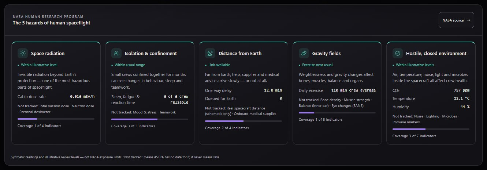
| Hazard | ASTRA kya track karta hai | Abhi track nahi (imandari se likha hai) |
|---|---|---|
| Space radiation | Cabin dose rate (mSv/h), illustrative review level | Poore mission ka total dose, neutron dose, personal dosimeter |
| Isolation & confinement | Neend, thakan, reaction time (har crew member ke apne normal se) | Mood/stress aur teamwork (sirf private self-report mein) |
| Distance from Earth | One-way delay, link available/blackout, Earth ke liye queue | Asli spacecraft ka faasla (yeh schematic hai), medical supplies |
| Gravity fields | Rozana exercise (minutes) | Haddi ki density, muscle strength, balance, aankhon ki tabdeeli (SANS) |
| Hostile, closed environment | CO₂, temperature, humidity | Shor (noise), roshni, microbes, immune markers |
Rangon ka matlab: teal/hara = range mein · amber = review chahiye · laal = priority review · gray = maloom nahi / track nahi. Rang ke saath hamesha likha hua label bhi hota hai.
ASTRA ko sirf Node.js 24.21 ya naya chahiye. Koi package install, internet ya API key zaroori nahi. Project ke andar ek portable Node pehle se maujood hai: artifacts\n03-windows-tools\node.exe — isi ko istemal karein.
cd /d "C:\Side projects\NASA PROJECT\ASTRA-Space-Medical-AI"
set "DEMO_DIR=%TEMP%\astra-demo-%RANDOM%" mkdir "%DEMO_DIR%"
set "ASTRA_DB=%DEMO_DIR%\astra.sqlite" set HOST=127.0.0.1 set PORT=3000 set ASTRA_SPEED=1
artifacts\n03-windows-tools\node.exe services/api/server.mjs
http://127.0.0.1:3000 → role chunein → Enter simulation.Ctrl + C. Usi data ke saath dobara: usi cmd window mein step 4 phir chalayein.set PORT=3001 aur browser mein :3001. ASTRA_SPEED=1 = asli waqt; 30 = 30 guna tez.npm test na chalayein (us mein permission wale native tests shamil hain).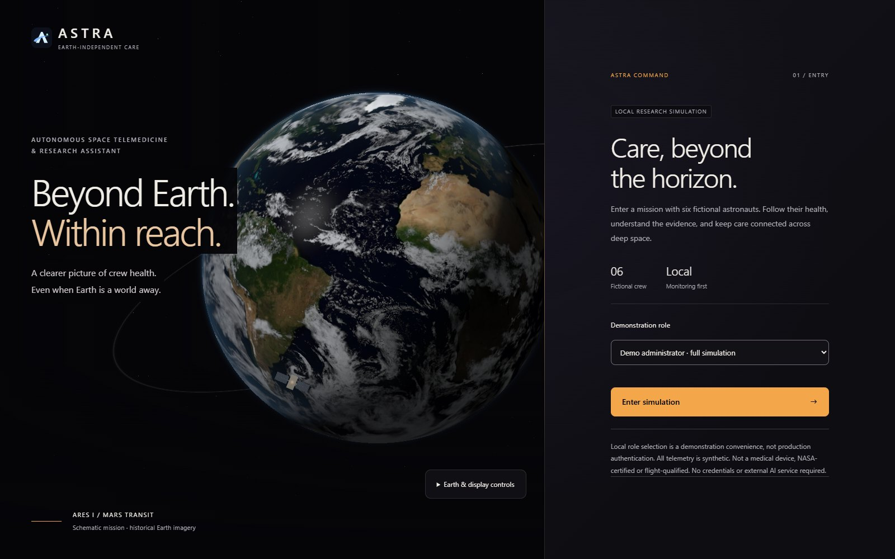
| Role | Kya kar sakta hai | Demo mein kab |
|---|---|---|
| Demo administrator | Sab screens, Scenario lab chalana, link/blackout control, acknowledgement | Demo shuru karne aur scenario lagane ke liye |
| Astronaut | Sirf apna record (CREW-03, Amara Okafor): My health, symptom report, check-in, acknowledgement | “Astronaut khud andaza lagata hai” dikhane ke liye |
| Flight surgeon / Mission control | Saare crew ka review, cases, acknowledgement, self-reports parhna | Medical review ka nazariya |
| Viewer / Researcher | Sirf dekhna; private check-ins aur self-reports nahi | Privacy dikhane ke liye |
| System administrator | Sirf audit records; medical screens nahi | Security sawal par |
Role badalna: neeche left mein logout button dabayein, phir naya role chunein. Har role ki ijazat server par check hoti hai, browser par nahi.
Poore mission ki ek nazar mein tasveer: kitne crew ka data reliable hai, kitne normal hain, kitne review events khule hain, aur Earth link ka haal.
Kisi crew card par click karein detail ke liye. Upar “Spacecraft / Earth received” se dekhein ke Earth ko kya pohncha hai.
“Health indicators jama karna” + “Earth se door” — Earth view sirf delayed, pohnche hue packets dikhata hai.
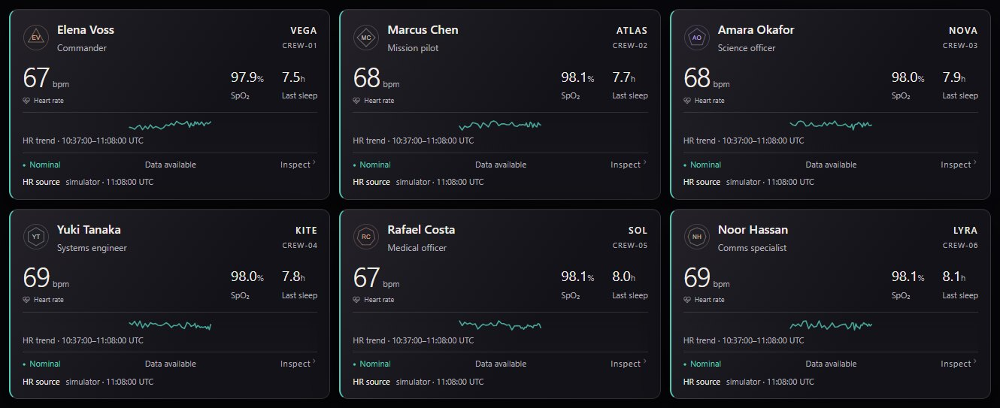
Yeh screen khaas taur par astronaut ke liye hai — challenge ka sab se ahem hissa. Teen sawalon ka jawab deti hai: Kya main theek hoon? Kya badla? Ab kya karun?
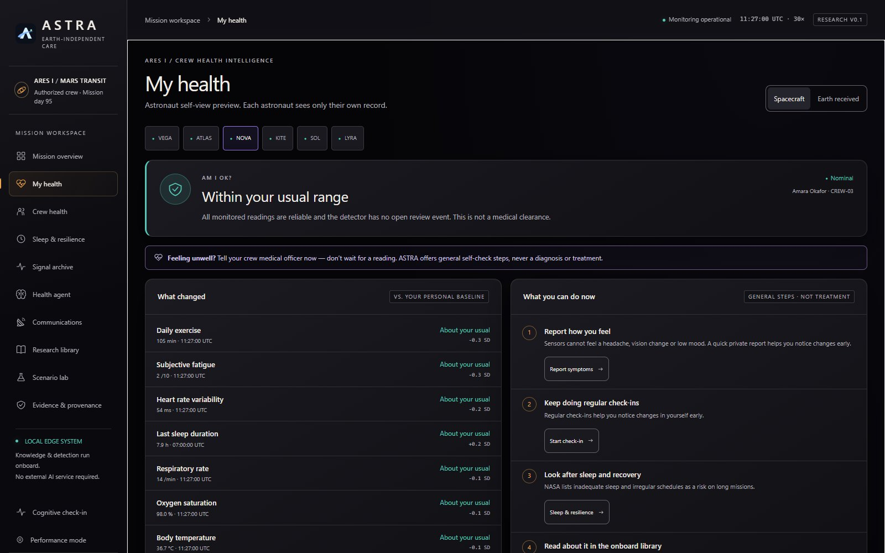
| Jawab | Kab aata hai |
|---|---|
| Within your usual range | Sab readings reliable hain aur detector ne koi review event nahi khola. |
| Needs a check | Detector ne aisi tabdeeli record ki jo kaafi der tak rahi aur insaani review chahiye. (Tashkhees nahi.) |
| Can’t tell right now | Data ghaib, purana ya ghalat hai — is liye ASTRA andaza nahi lagata. |
| Readings look usual — but you reported symptoms | Sensors normal hain lekin astronaut ne khud alamaat report ki hain. Sensors sab kuch mehsoos nahi kar sakte. |
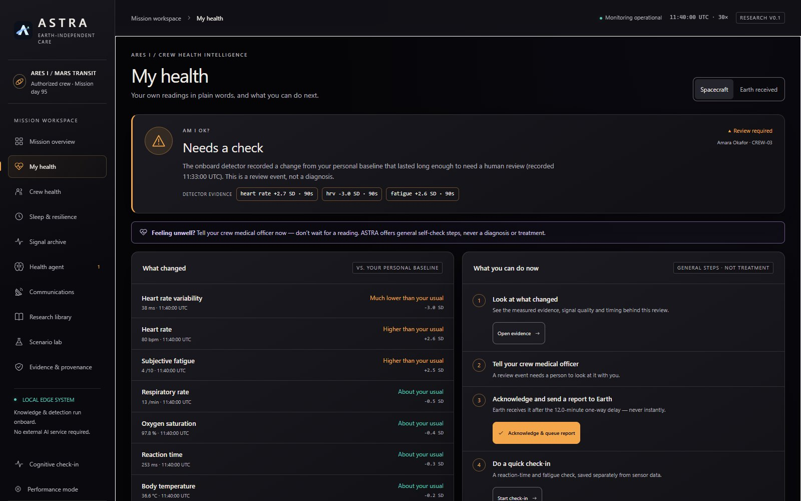
9 personal readings apne normal se compare: “About your usual”, “Higher than your usual”, “Much lower…”. Unknown ko Unknown hi likha jata hai.
Sirf aam, mehfooz qadam: evidence dekhein, crew medical officer ko batayein, report Earth bhejein, check-in, neend ka page, research library.
Seedha “evaluate and act on the status of their health” — astronaut khud dekh kar faisla aur amal kar sakta hai.
Hifazat: Yeh steps kabhi dawa ya ilaaj nahi batate. Har screen par likha hai: “Feeling unwell? Tell your crew medical officer now — don’t wait for a reading.”
Sensors sar dard, nazar ki tabdeeli ya udaasi mehsoos nahi kar sakte. Is liye astronaut 13 alamaat mein se jo mehsoos ho chun kar uski shiddat (Mild / Moderate / Severe) bata sakta hai, aur ek chhota note likh sakta hai. Sab “None” rehne de to record hota hai ke woh theek mehsoos kar raha hai.
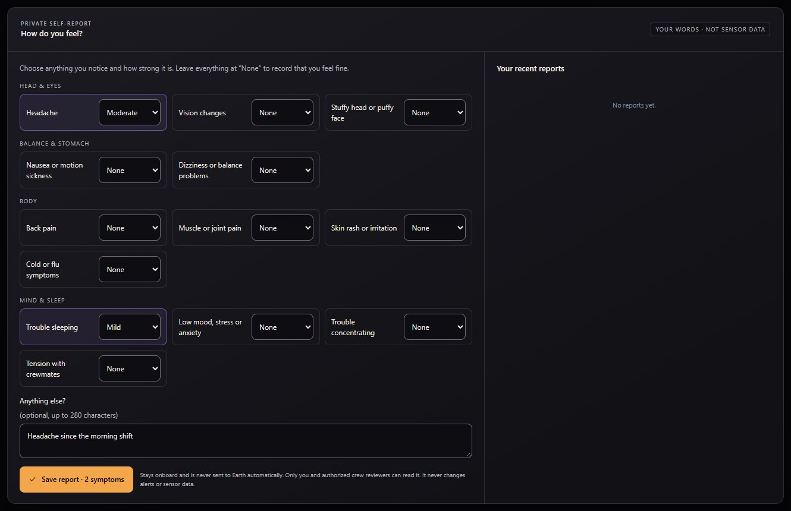
| Groups | Alamaat | Juda hua NASA risk |
|---|---|---|
| Head & eyes | Headache, Vision changes, Stuffy head / puffy face | SANS, cabin CO₂, fluid shift |
| Balance & stomach | Nausea / motion sickness, Dizziness / balance | Sensorimotor & vestibular |
| Body | Back pain, Muscle/joint pain, Skin rash, Cold/flu | Musculoskeletal, immune, microbes |
| Mind & sleep | Trouble sleeping, Low mood/stress, Trouble concentrating, Tension with crewmates | Sleep, behavioural health, teamwork |
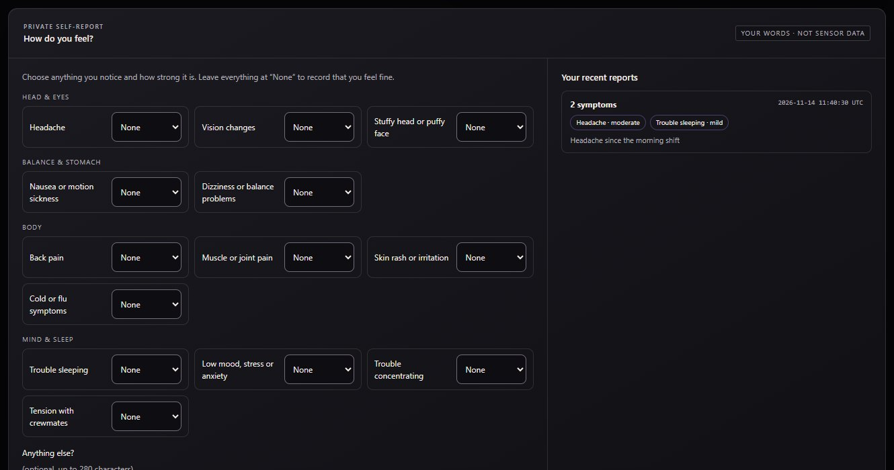
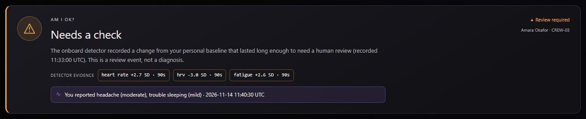
Privacy: Report spacecraft par hi rehti hai, Earth ko khud nahi jati. Sirf astronaut khud aur authorized reviewers parh sakte hain; Viewer/Researcher nahi. Report kabhi alert, sensor data ya baseline nahi badalti. Audit log mein sirf event darj hota hai, alamaat ka mawaad nahi.
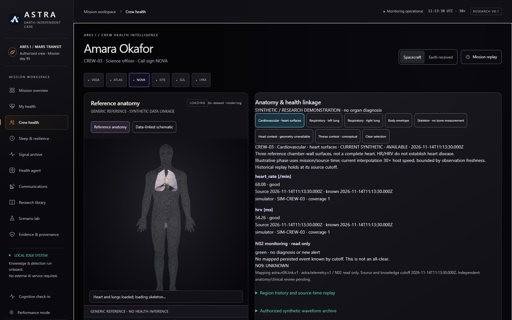
Ek crew member ki poori detail: personal trend charts, detector evidence, acknowledgement, aur dil/phephron ka data se juda 3D model.
Upar call-sign tabs se crew chunein; “Cardiovascular” jaisa system chunein; model ghumaein; trend chart mein metric badlein.
Indicators ko jism ke hisson se jod kar samajhna aasan. Generic model hai — koi bimari jism par “dikhayi” nahi jati.
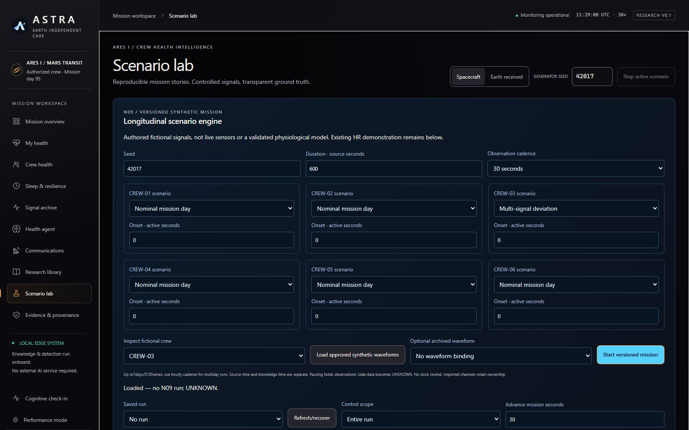
Judges ke saamne control ke saath tabdeeli paida karna: dil ki dhadkan ka barhna, neend ki kami, radiation spike, sensor ka band hona, blackout.
CREW-03 par scenario lagayein → Start → “Advance clock” se waqt aage barhayein → My health / Crew health mein nateeja dekhein.
Dikhata hai ke system asli tabdeeli par kaise react karta hai. Detector ko scenario ka naam nahi pata — woh sirf measurements dekhta hai.
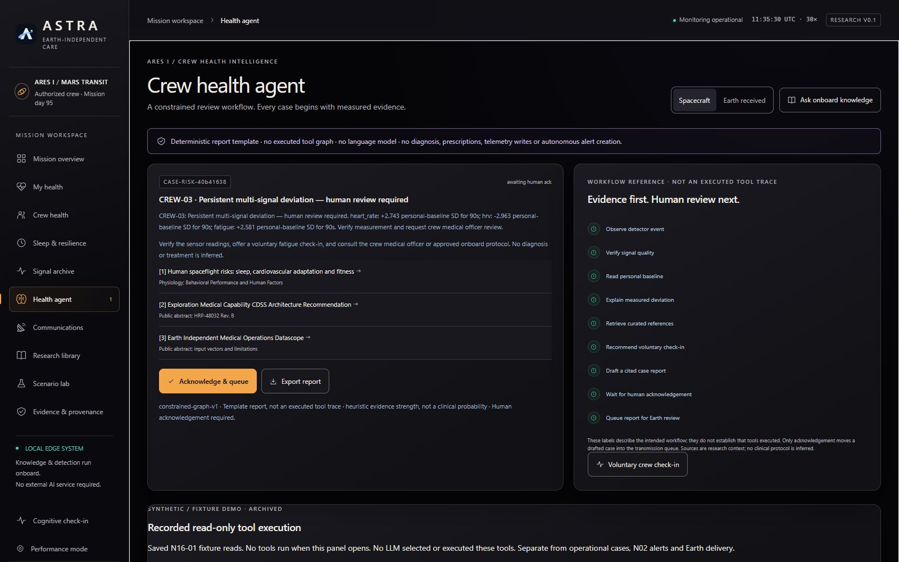
Har alert ko ek saaf, cited report mein badalna jise insaan review kare. Template report hai — language model nahi.
Case parhein, citations kholein, phir “Acknowledge & queue” dabayein — report Earth ki queue mein chali jati hai.
“Act on health status”: evidence → insaani faisla → Earth ko delayed report. AI khud alert ya ilaaj nahi banata.
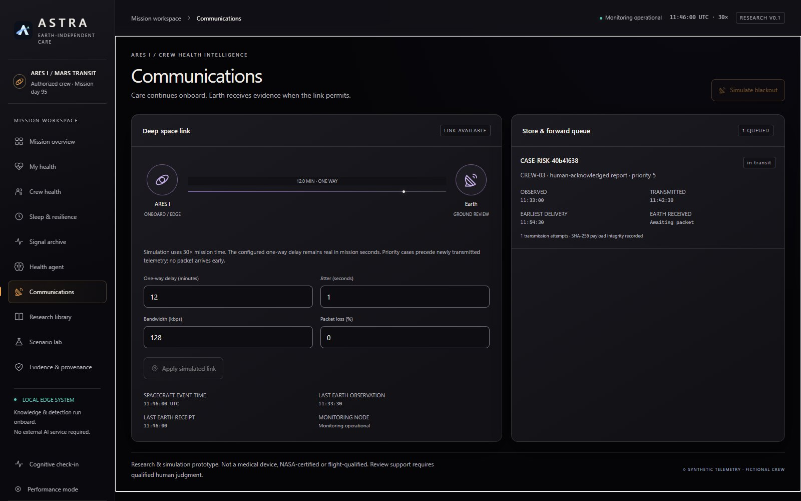
Deep-space link ka simulation: delay, jitter, bandwidth, packet loss aur blackout. Reports priority ke saath queue hoti hain aur restart ke baad bhi mehfooz rehti hain.
Delay/loss badal kar “Apply” karein; “Simulate blackout” se link band karein aur dekhein ke report onboard intezar karti hai.
NASA hazard “Distance from Earth” ka seedha jawab: Earth se madad der se aati hai, is liye care onboard jari rehti hai.
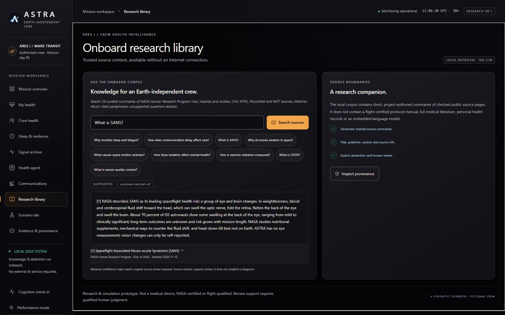
Astronaut ko Earth se poochhe baghair bharosemand maloomat dena. Agar source mein jawab na ho to system jawab dene se inkaar (abstain) karta hai.
Aam alfaaz mein sawal likhein (jaise “Why do astronauts feel dizzy?”) ya tayyar sawalon par click karein; citation link par asal NASA page dekhein.
Self-reliance: NASA ke research resources spacecraft ke andar hi maujood.
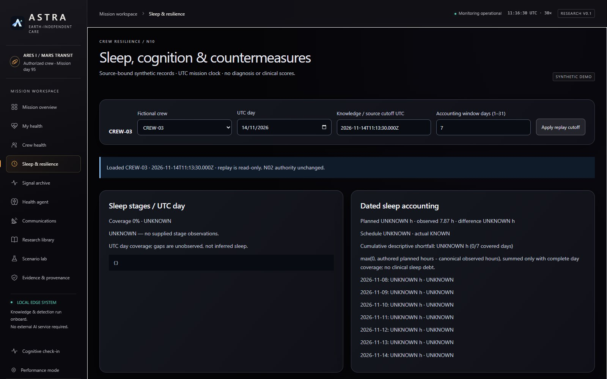
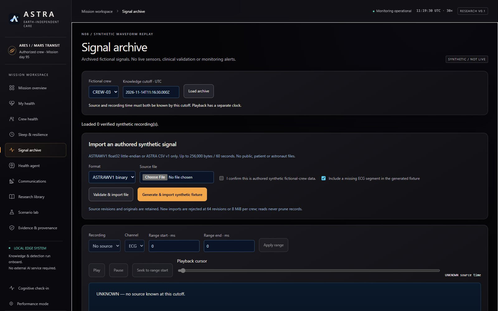
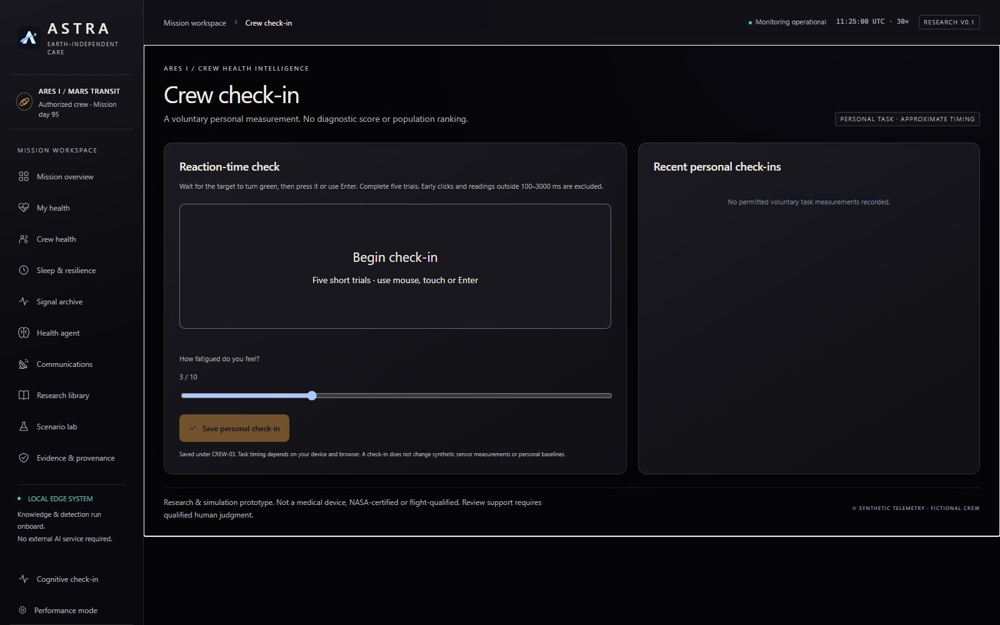
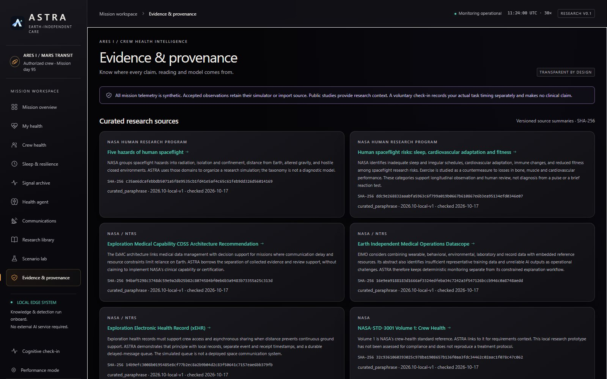
Check-in thakan aur reaction time (isolation hazard) ko napta hai. Provenance page judges ko dikhata hai ke koi daawa bina source ke nahi kiya gaya.
Naya aarzi database aur ASTRA_SPEED=1 (ya tez demo ke liye 30) ke saath shuru karein.
| Waqt | Kya karein | Kya kahein |
|---|---|---|
| 0:00–0:30 | Demo administrator se login → Mission overview | “6 farzi astronauts, synthetic data, poora offline. Yeh research prototype hai, medical device nahi.” |
| 0:30–1:00 | Neeche 5 hazards panel dikhayein | “NASA ke 5 hazards — kya track hota hai aur kya nahi, imandari se.” |
| 1:00–1:40 | Scenario lab → CREW-03 par cardiorespiratory-drift, seed 42017 → Start → Advance clock 300 | “Asli detector measurement se tabdeeli pakadta hai; scenario ka naam usay nahi pata.” |
| 1:40–2:30 | Logout → Astronaut role → My health | “Astronaut khud dekhta hai: Needs a check, kya badla, ab kya kare.” |
| 2:30–3:15 | “How do you feel?” mein Headache = Moderate → Save | “Sensors sar dard mehsoos nahi karte — astronaut ki apni awaaz bhi shamil hai, private aur onboard.” |
| 3:15–3:50 | “Acknowledge & queue report” dabayein → Communications | “Insaan ki manzoori ke baad report 12 minute delay ke saath Earth jati hai — foran nahi.” |
| 3:50–4:30 | Crew health → 3D anatomy → Cardiovascular | “Readings jism se judi, lekin generic model — koi bimari dikhai nahi jati.” |
| 4:30–5:00 | Research library mein ek sawal; phir page refresh | “Offline research; restart ke baad bhi data mehfooz. Hadood: synthetic data, scientific review baqi.” |
Tip: Agar waqt kam ho to Scenario lab ki jagah pehle se chalaya hua scenario rakhein, aur seedha My health se shuru karein — challenge ka markazi jawab wahi hai.
| Sawal | Jawab |
|---|---|
| Kya yeh asli NASA data hai? | Nahi. Saara telemetry synthetic hai aur screen par saaf likha hai. Asli astronaut data public nahi hota. |
| AI kya karta hai? | Alerts ek fixed, quality-gated statistical detector banata hai (personal baseline, median/MAD, persistence). Language model alert, ilaaj ya telemetry nahi badal sakta. |
| Internet ke baghair chalta hai? | Haan. Detection, research library aur saara data local hai — Mars par bhi yahi zaroorat hai. |
| Agar sensor kharab ho jaye? | Screen gray / “Can’t tell right now” dikhati hai. Missing data ko kabhi healthy nahi mana jata. |
| Astronaut kaise amal karta hai? | My health ke steps, symptom report, check-in, crew medical officer ko batana, aur acknowledgement ke baad Earth ko report. |
| Privacy? | Roles server par check hote hain; astronaut sirf apna record dekhta hai; self-reports private hain; audit log hash-chained hai. |
Saari tasveerein docs/demo/guide-images/ folder mein hain aur slides mein seedhi lag sakti hain: 01-login, 02-overview, 03-crew-grid, 04-hazards, 05a/05b/05c-myhealth, 06a/06b-symptom, 07-crew-health, 08-scenario-lab, 09-health-agent, 10-communications, 11-research-library, 12-sleep, 13-signal-archive, 14-checkin, 15-evidence.